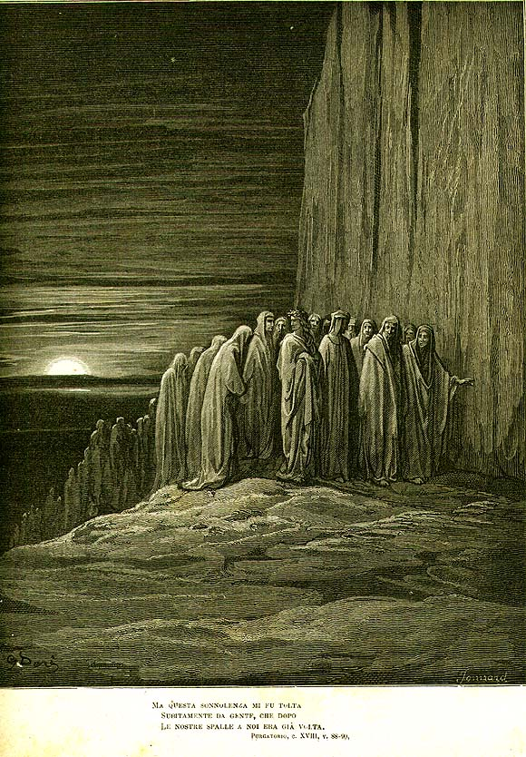

Песнь 18 из 33
Уныние: природа любви. Бег нерадивых

Кратко
Вергилий продолжает: любовь врождена душе, но человек волен ею управлять — потому и отвечает за свои влечения. Пока он говорит, по уступу с криком проносится толпа унылых (accidiosi): при жизни они были вялы к добру, а теперь искупают это неустанным бегом. На бегу они выкрикивают образцы рвения (Мария, поспешившая в горнюю страну; стремительный Цезарь) и наказанной косности (евреи, что замешкались в пустыне). Аббат Сан-Дзено окликает их на ходу. Данте, утомившись, засыпает.
Главные моменты
- Учение о любви и свободе воли: разум должен править врождённым влечением.
- Кара унылых — безостановочный, исступлённый бег.
- На бегу выкликаются образцы усердия и примеры пагубной лености.
- Данте погружается в сон — переход к новой песни.
Значение
Леность лечится противоположным — неустанным рвением; завершение «доктрины любви».